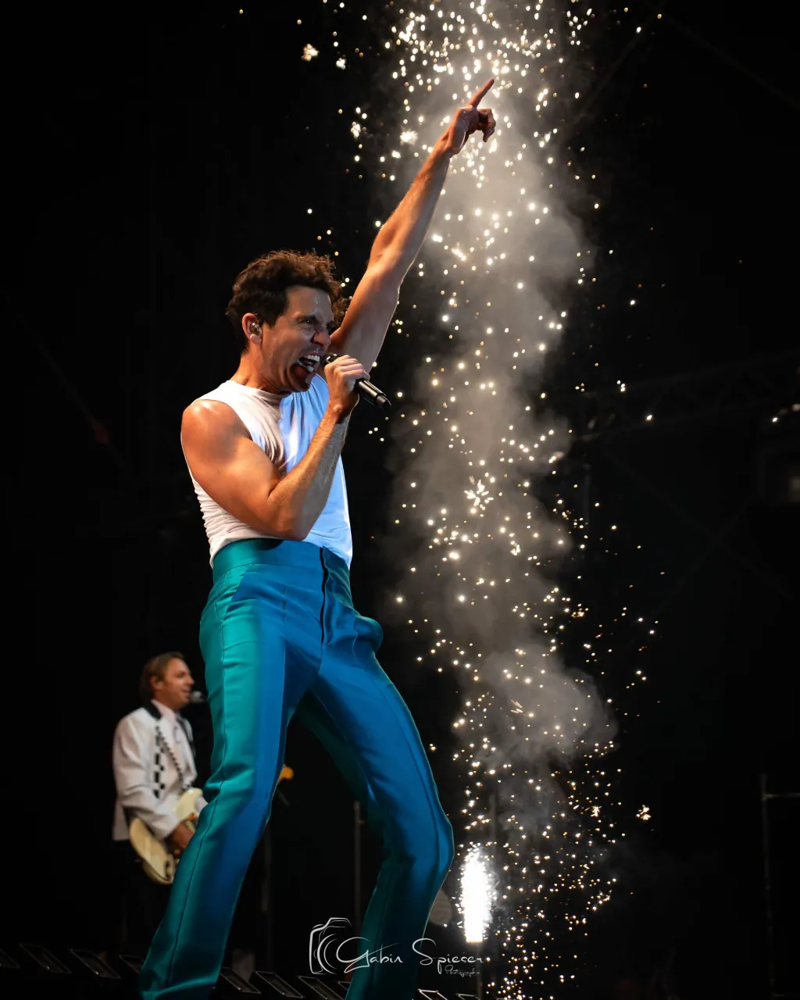
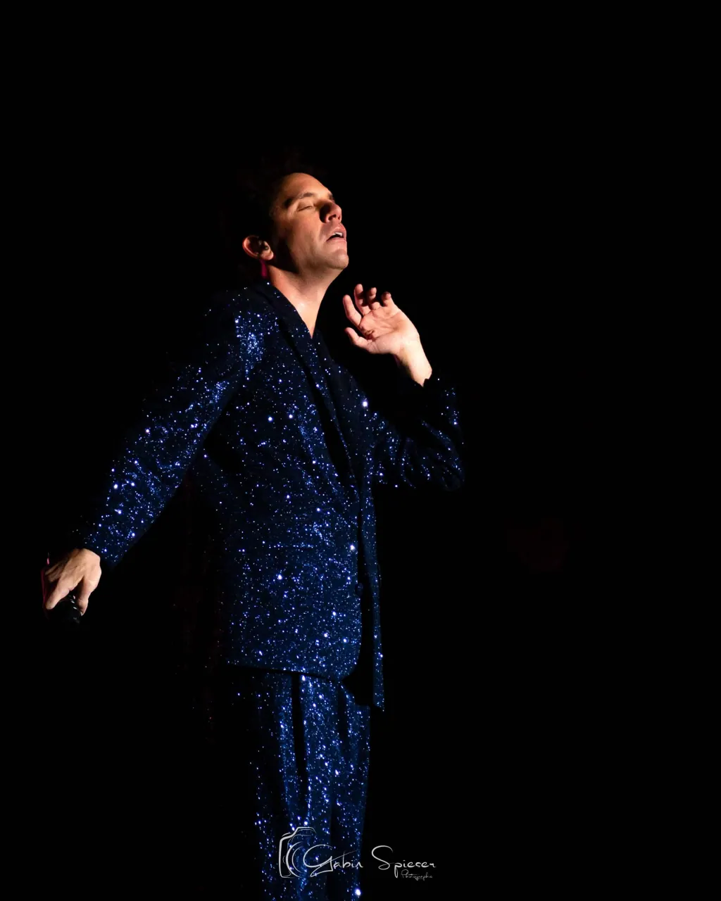
Gabin Spieser · SériesN° 01
Mika
Trois costumes
Trois costumes. Trois mondes. Pas un temps mort.
8 photographies · Foire en Scène · Châlons-en-Champagne · 2026

Séries · 123 photographies
Je veux raconter votre sueur.
Votre beauté. Votre rage. Votre scène.
Le reste, je vous laisse le regarder.


Trois costumes
Trois costumes. Trois mondes. Pas un temps mort.
8 photographies · Foire en Scène · Châlons-en-Champagne · 2026

Costume blanc, piano jaune
Le blanc qui brûle, le jaune qui chante.
18 photographies · Foire en Scène · Châlons-en-Champagne · 2026
Noir, blanc, noir
Une voix, deux ronds de lumière, et pas une seule couleur.
19 photographies
Entrer dans la série
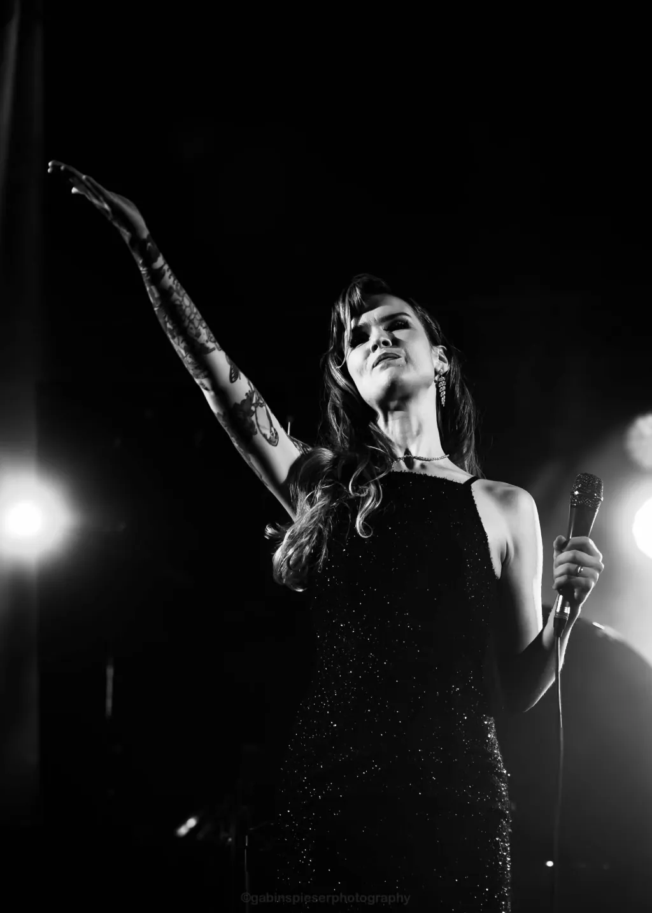
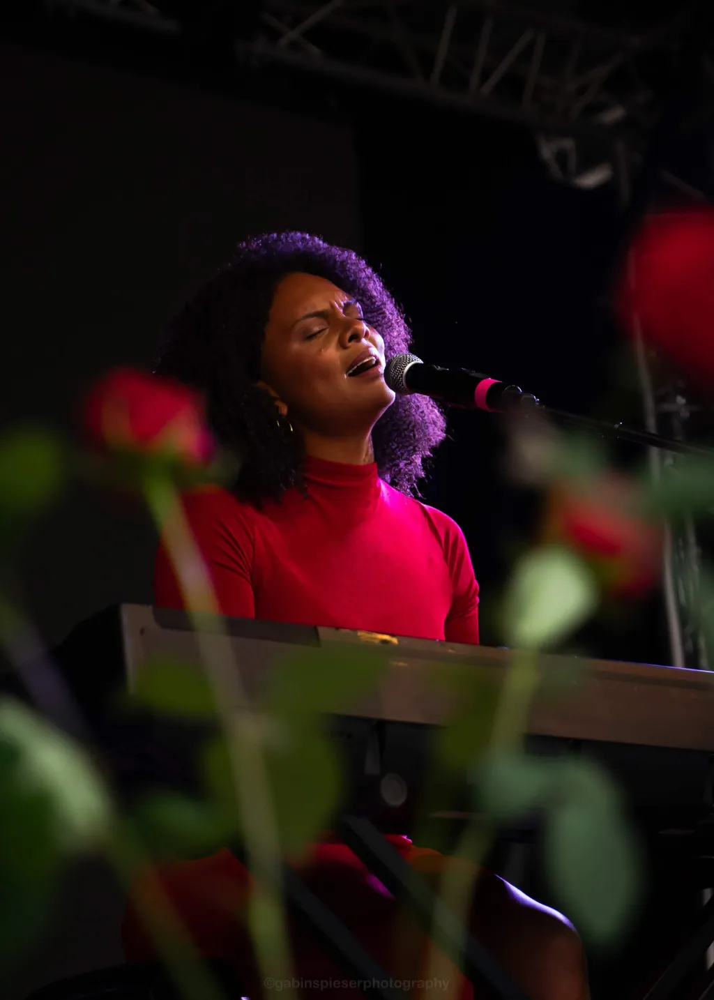
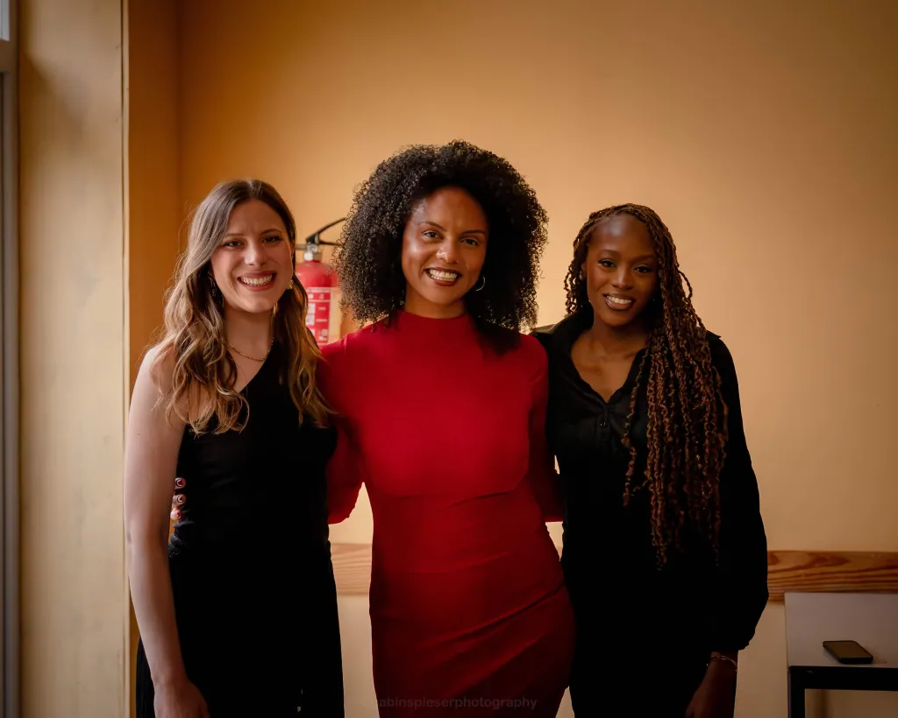
Autour de la scène
Tout ce qu’on ne montre jamais d’un concert.
14 photographies · Place aux Artistes · Wavre · 21 août 2026

Seul, puis à deux
La fumée, la braise, et le doigt vers le ciel.
10 photographies

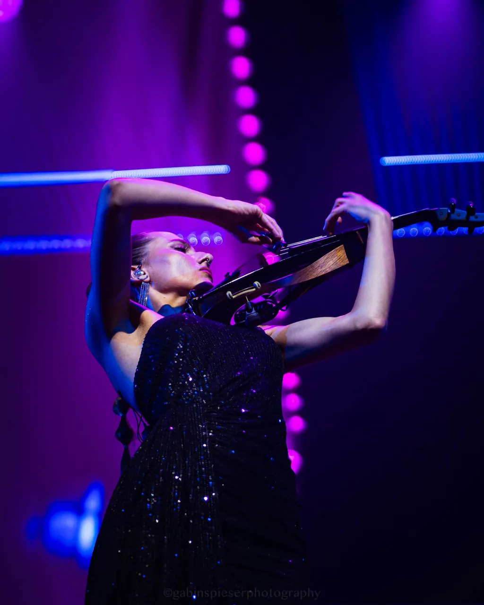
L’orchestre et la nuit
Un orchestre entier contre la nuit.
9 photographies · Reims Arena · 12 avril 2026
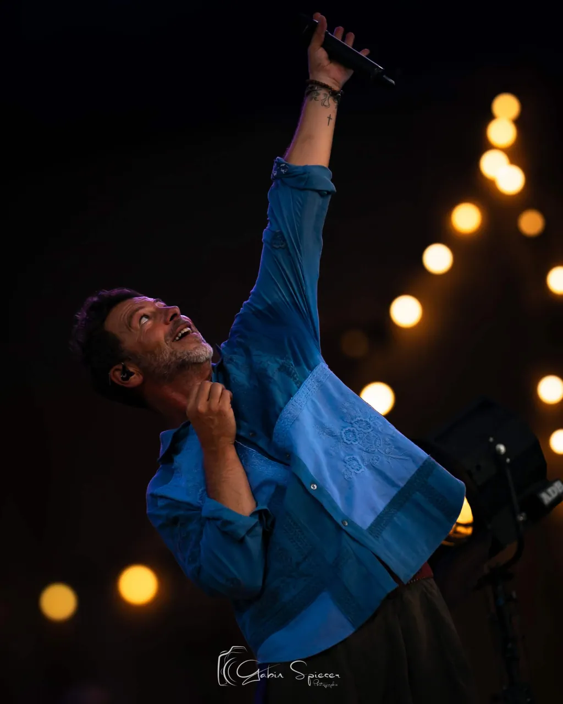
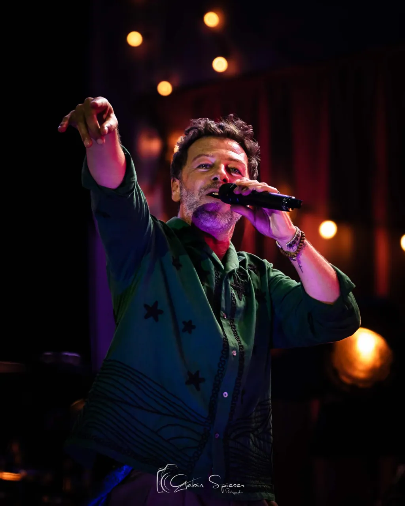
Sous les guirlandes
Un soir de bal sous les ampoules.
8 photographies
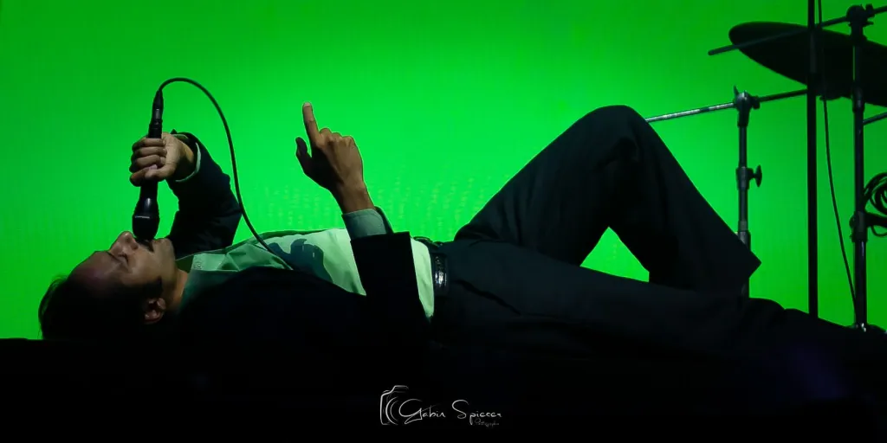
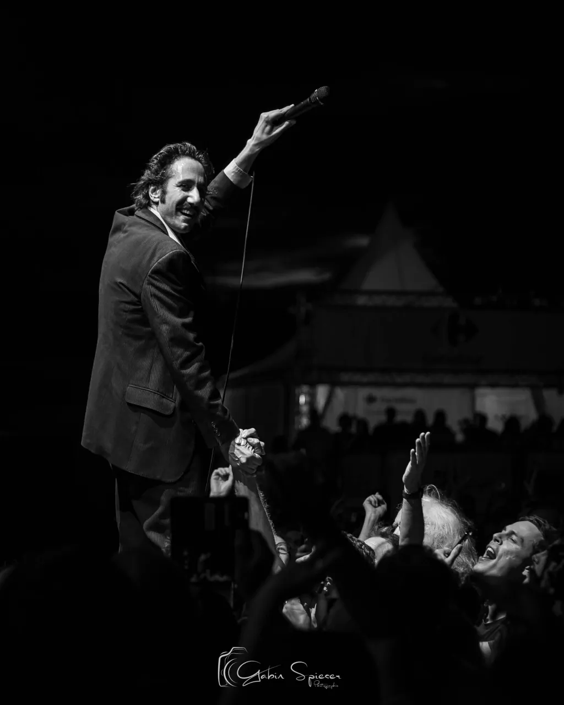
De la couleur au noir et blanc
Le vert, le jaune, puis la bascule.
6 photographies · Foire en Scène · Châlons-en-Champagne · 2026


Lumières blanches
Une veste blanche contre un mur de lumières.
6 photographies


Du recueillement à la joie
Du dedans au dehors, dans un bleu presque marin.
7 photographies
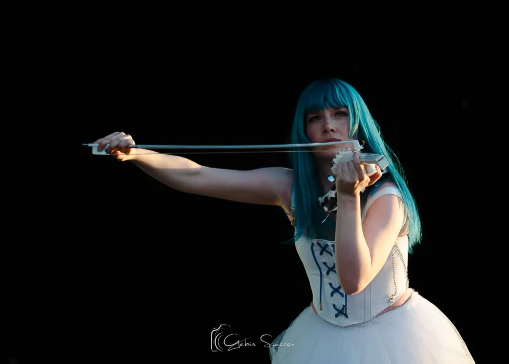
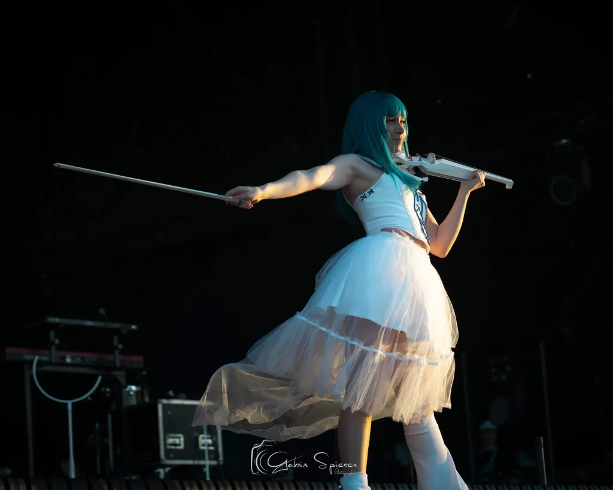
L’archet et le tulle
L’archet comme une épée, le tulle comme une danse.
4 photographies
Quelques images. Pas une de trop.
Lokyto · Styleto · Virginie Rohart · Milla Leika · 10 photographies
Ouvrir le carnetL’ambiance
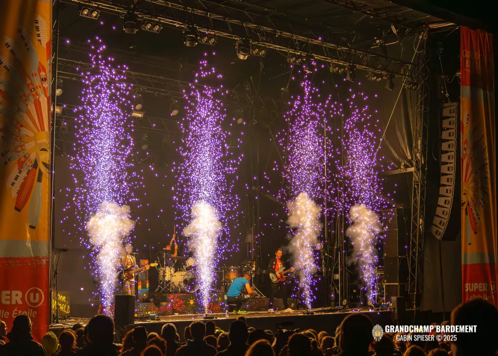
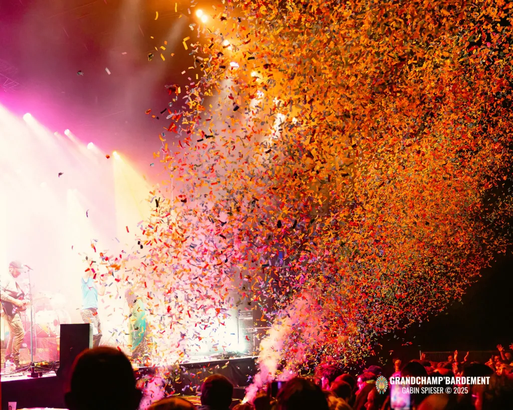
Et maintenant ?
Un concert, un portrait, un projet à raconter de A à Z.
On commence par en parler.
Au-delà des images
Découvrez un reportage d’Electro Symphony à Reims Arena, ou préparez les images de votre propre projet.
La scène, les musiciens, le public. Un reportage préparé avec vous pour garder l’énergie du live.
Découvrir le reportage concertPortrait, affiche, single ou pochette. Des visuels pensés pour représenter votre projet musical.
Préparer votre portraitPhotographies : Gabin Spieser. Pour une publication ou un autre usage des images, parlons de votre projet et des droits nécessaires.
Les scènes / Les histoires
Retrouvez deux sélections en contexte : les artistes de Foire en Scène à Châlons-en-Champagne et les musiciens d’Electro Symphony à Reims Arena. Ces reportages prolongent les photographies du portfolio, avec leurs légendes et les liens officiels des artistes.